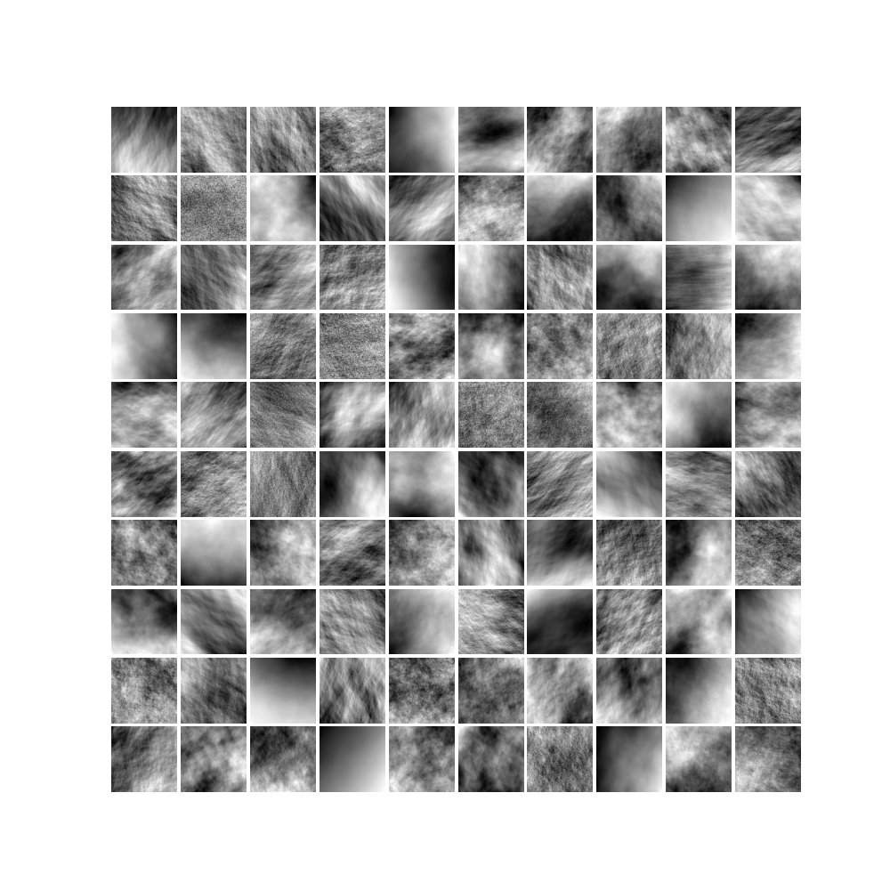

Note
Click here to download the full example code
Texture Patchwork¶
Code author: Frédéric Richard <frederic.richard_at_univ-amu.fr>
This example shows how to build a series of simulations of a field model by changing its parameter values at random. This is useful to construct a dataset of textures.
from matplotlib import pyplot as plt
import matplotlib.gridspec as gridspec
import numpy as np
from afbf import tbfield, coordinates
ncols = 10
nrows = 10
nbexamples = ncols * nrows # Number of examples.
N = 100 # Size of examples.
# Mode of simulation for step values (alt, 'unif', 'unifmax', or 'unifrange').
simstep = 'unifmin'
# Mode of simulation for step interval bounds (alt, 'nonunif').
simbounds = 'unif'
# Define the field to be simulated and coordinates where to simulate.
field = tbfield('afbf-smooth')
coord = coordinates(N)
# Set the mode of simulation for the Hurst function.
field.hurst.SetStepSampleMode(mode_cst=simstep, mode_int=simbounds)
# Prepare the figure
fig = plt.figure(figsize=(nrows, ncols))
gs = gridspec.GridSpec(nrows, ncols)
gs.update(wspace=0.05, hspace=0.05) # Set axe spacing.
# Generate several examples.
for example in range(nbexamples):
# Sample new model parameters.
np.random.seed(example)
field.hurst.ChangeParameters()
field.topo.ChangeParameters()
# Uncomment to show field parameters.
# field.DisplayParameters()
# Compute field features.
field.ComputeFeatures()
# Uncomment to show some field features.
# print('Hurst index:', field.H)
# print('Std deviation (hurst):', field.aniso_indices_hurst[0])
# print('TV-norm (hurst):', field.aniso_sharpness_hurst[0])
# Simulate an example with the current model.
np.random.seed(example)
field.EvaluateTurningBandParameters()
simu = field.Simulate(coord)
# Uncomment to display the field simulation.
# simu.Display(2)
# To handle simu as an ndarray of numpy, set
image = np.reshape(simu.values, simu.M)
# To further display it with pyplot of matplotlib:
i = int(np.floor(example / ncols))
j = int(example - i * ncols)
ax = plt.subplot(gs[i, j])
ax.imshow(image, cmap='gray')
ax.set_axis_off()
plt.show()
Total running time of the script: ( 2 minutes 15.834 seconds)